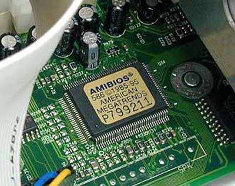

ROM

Η ROM (Read-Only Memory, μτφ. μνήμη μόνο για ανάγνωση) είναι τύπος ηλεκτρονικής μνήμης, μόνο ανάγνωσης
(γράφεται μόνο μία φορά από το εργοστάσιο που την κατασκευάζει) και μη πτητική (δεν χάνει τα δεδομένα της με τη διακοπή
της τροφοδοσίας ρεύματος) που χρησιμοποιείται κυρίως σε ηλεκτρονικούς υπολογιστές αλλά και σε ηλεκτρονικές συσκευές.
Υπάρχουν ειδικές περιπτώσεις που μπορούμε να αλλάξουμε τα περιεχόμενα μιας μνήμης ROM αλλά αυτή η αλλαγή είτε γίνεται
πολύ αργά είτε απαιτούνται ειδικά μηχανήματα και τεχνικές.